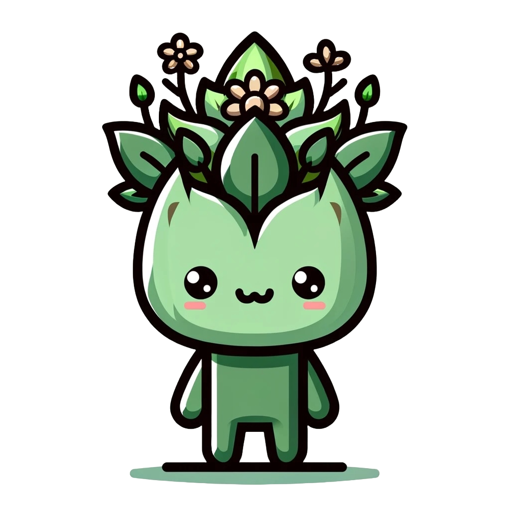

Green Pulse is an app where you can visually see the current pollution of your country with the help of our friend 'Tomurcuk'.
But what Tomurcuk does to help you contribute a green world mission?
Matter of fact, nothing. Tomurcuk only want to be happy and he is happy when the earth is happy so we encourage you to take a step and help us make Tomurcuk happy and never forget
One greenbeat at a time.
We are group of student from Koç University who want to make world greener so we decided to take an action and start building Green Pulse.
We believe, greener world start with everyone of us and we know world is one people behind to succed if you are not here, fighting for better future, better world as like our motto says.
One greenbeat at a time
And we want to specially thanks the Vodafone Campus Lab team for the opportunity they gave us to help the world to be a better place and let us fight for the future.
Before this program, we never thought we could come up with a product, an idea we could be more prouder. Therefore, thank you all for your support and help.
We also want to thank everyone join this program and enriched us with their challanges and ideas.
If there is only thing we learned from the program is that there is no one who lost from the program and we want to say our
Thanks for the journey...
Bensu Özyurt | Electrical and Electronics Engineer at Koç University
Eylül Ilgın Pamuk | Mechanichal Engineer at Koç University
Mustafa Berkay Sökmen | Study Physics at Koç University | Double Major with Electrical and Electronics Engineering at Koç University
Rabia Nisa Kalkan| Study Physics at Koç University | Double Major with Electrical and Electronics Engineering at Koç University
In our contry, many people do not have any idea what air pollution is, how it impact videly range of people and most importantly how can they contribute.
So our mission with this app is to help them contribute and let them join our mission because we know two heads is better than one.
And we asked ourselves, what is the best possible way to do it in today's world? How can we let people take the matter into their own hands?
What we realize is, we must create an app where they can see their impact virtually and therefore while they try to make Tomurcuk happy, they would also help world become greener.
Because today's problem needs today's solutions.